1/19/24 - Journal Entry #1
This week in Engineering we learned about chemical engineering, and started an 8 week long projoct.
We didnt have aschool on monday so on tuesday we went over some slides on chemical engineering, and learned about what all the different branches do.
Then on wednesday we got introduced to our new project that we wil be working on for the next 8 weeks, you had to chose one of two projects, I chose to make a mousetrap car.
Then on thursday we worked mor on planning for our mousetrap cars, and had a quiz on chemical engineering on friday.
1/26/24 - Journal Entry #2
In the past two weeks we made non newtonian fluid, and finishec the CAD fro out mousetrap car
For our mousetrap car, my group is going for a simple design that has a big back wheel, small front wheels, and a long arm to help move it.
Next week we are planning to satrt building the body of our car.
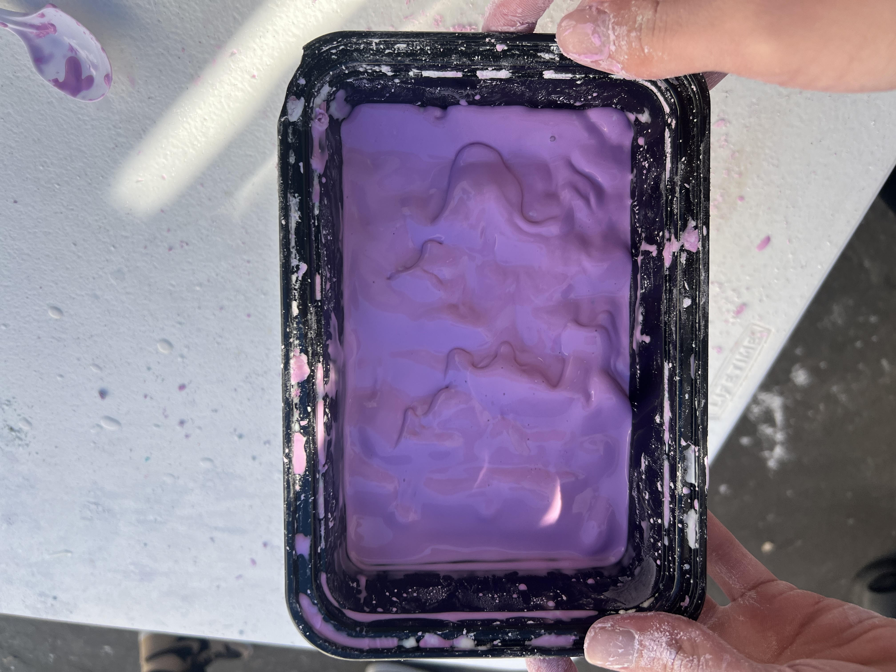
(Photo of non newtonian fluid)
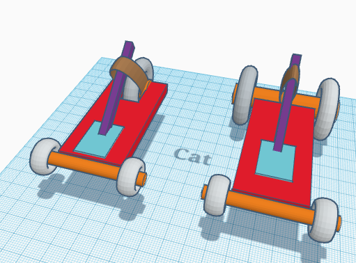
(Photo of mousetrap car CAD)
2/5/24 - Journal Entry #3
Last week in engineering we started to work on our mousetrap cars, my group worked on the body and the wheels of the car.
Our goal for this week is to finish our first car design, and test it to see what we can improve upon.
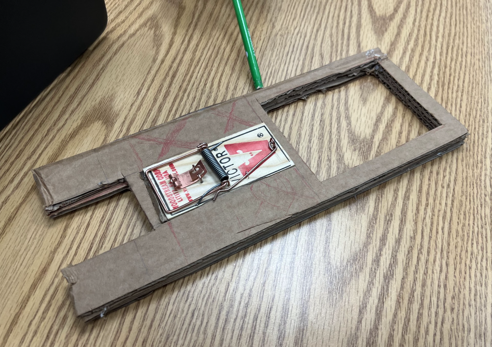
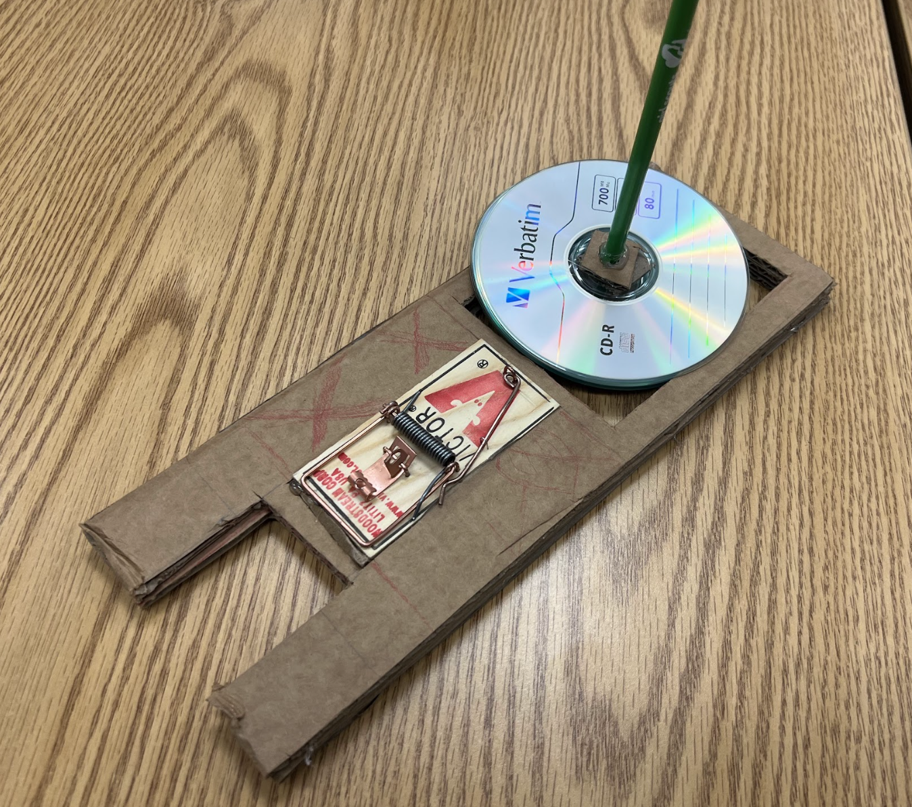
(Immages of Mouse Trap car)
2/13/24 - Journal Entry #4
Last week in engineering, we finished out first car design, tested it, then started to work on our second car.
On tuesday and wednesday we worked on finishing out first design then getting ready to test it.
Then on thursday we started to test our car and check what we can improve on in our next design.
Then on friday, we started to work on our second car design, using what we learned in the first design to make it better.
(Video of first Mouse Trap Car test)
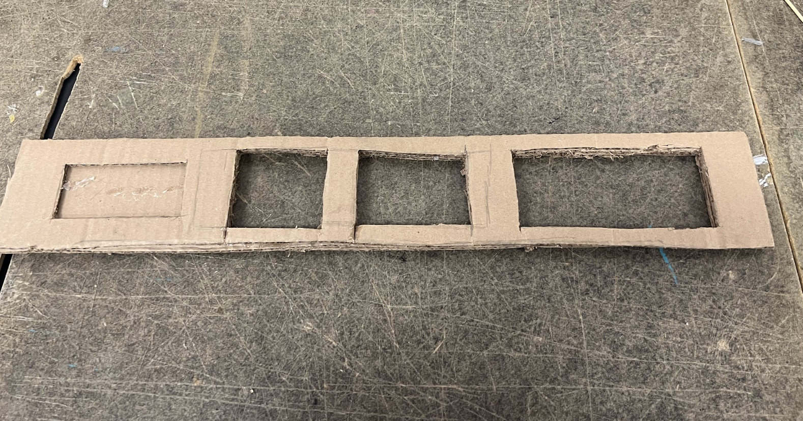
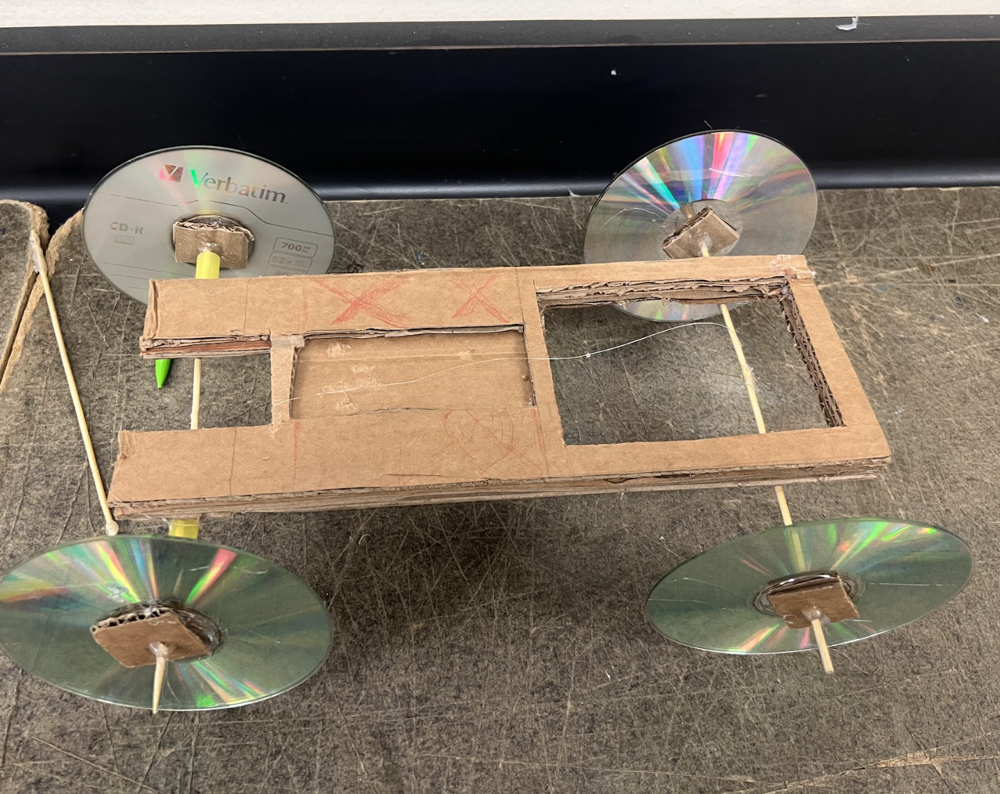
(Immages of both mousetrap car builds)
2/26/24 - Journal Entry #5
This week in engineering we finished our final mousetrap car designs, and did our final tests.
Our car design was long and skinny so that we could minimize weight, and maximize the ammount of string used, in the end our car preformed better than expected, our mousetrap car was able to go across the cafeteria before stopping.
Our first car desgin went around 25ft, and our second car went over 50ft, so our second design went double the distance of our first design.
In the end our mousetrap car was able to go the full ditance of the cafeteria, if I could make another car then I would change the wheels since the car did turn a bit while testing.
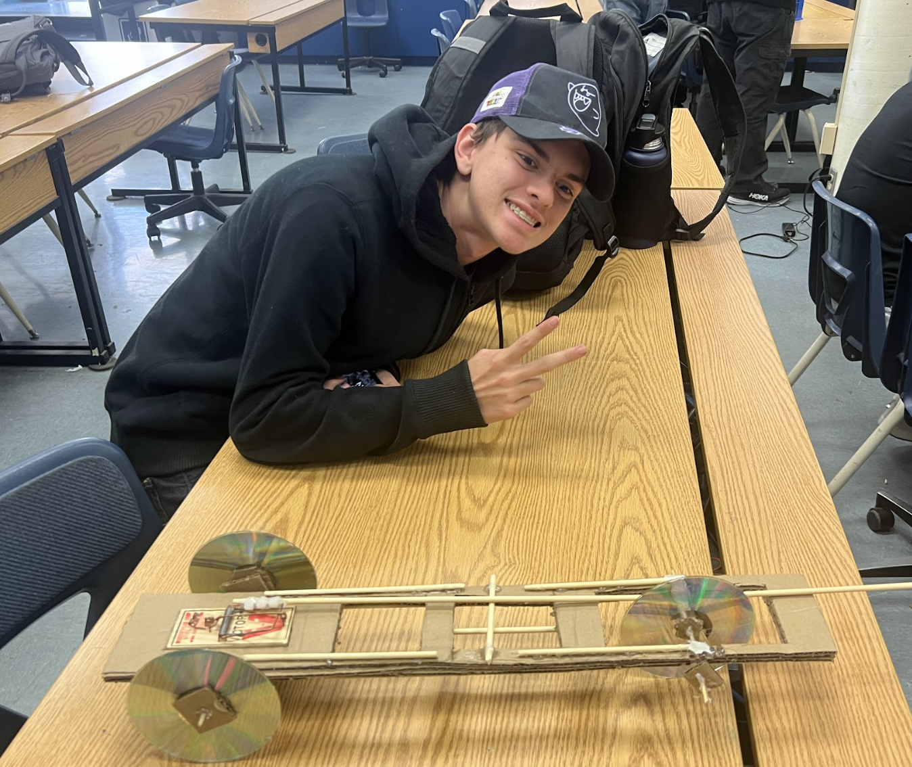
(Images of both mousetrap cars)
(Video of final test)
3/4/24 - Journal Entry #6
This week in engineering we started our next project and had an engineering challenge.
At the begining of the week we were introduced to our next engineering project, we were put into groups of 3-4 people and we have to make an egg drop device.
After we were told about the project we were given two days to make a CAD for our device.
Then on thursday we had a challenge where we had to work in groups of 2 to make a device that could as close as possible to a set target, my group landed 47 inches away from the target.
Finally on friday we finished our CAD, overall I would say our design is pretty good, but two of the sides of the design arent as protected as they could be.
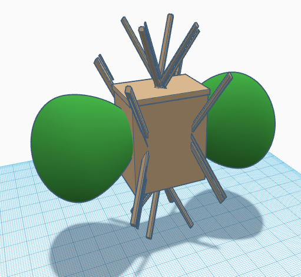
3/13/24 - Journal Entry #7
This week in engineering we finished our egg drop project, and tested it.
On monday we were given one last day to work on our egg drops to finish them before we test
Then on tuesday we tested our egg drops, on our first test my groups egg was able to survive the fall without cracking, but then we did a second test where we removed the baloons that coushined the fall, we then tested our new design and the egg broke. Overall we did very well and were able to acomplish our goal.
Over spring break im going to relax and sleep as much as possible
(CAD of original egg drop design)
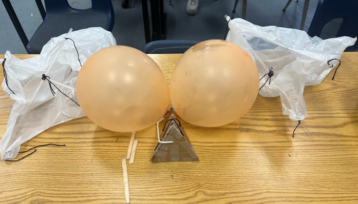
(Immage of final egg drop design)
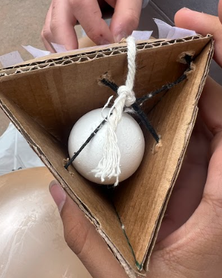
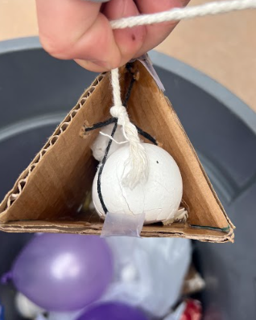
(Videos and pictures of final egg drops)
3/31/24 - Journal Entry #8
This week in engineering we started our new project
On tuesday we made slides about what we did over spring break were introduced to our next Engineering Project. Were aired up into groups and have to make a small boat that can travel 500 cm.
Then on tuesday we made out CAD for our boat, then i wasnt here for the rest of the week.
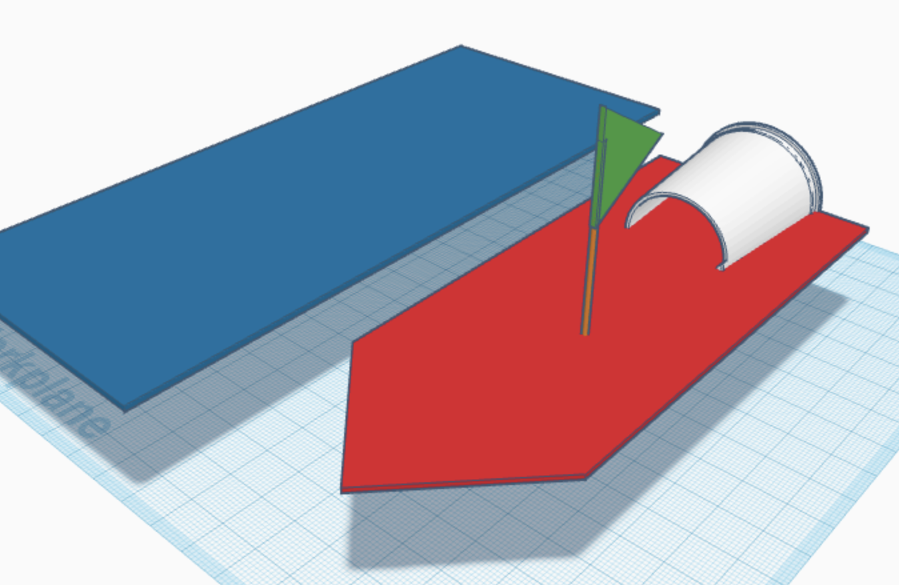
(Immage of boat CAD)
4/5/24 - Journal Entry #9
Over the past week in engineering we made out boat and did our final tests.
From monday to wednesday we were given time to work on our boats, my group finished out design on tuesday and did some final touches on wednesday
Then on thursday we got some time to work on our boats, then we tested them, out boat went areoun 120cm, Overall we did pretty good, we couldve reinforced our base a bit more, but it still worked.
OVer this past year my favorite parts of this class was getting to work in groups on fun projects.
This weekend im going to hang out with some of my friend who are visiting from Dubai.
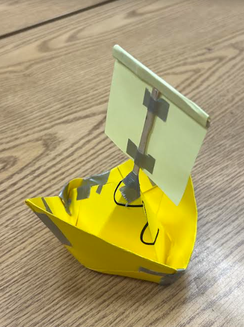
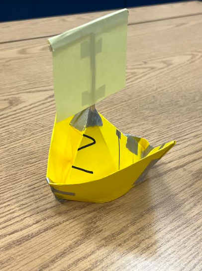
(Immages of final boat)
4/15/24 - Journal Entry #10
Last week we started our final project for engineering, and did an engineerign challenge
We were introduced to our engineering final, which is to make a cardboard boat that can hold two our of four team members that made the boat, throughout the week we started and finished the CAD forour boat.
Then on thrusday we had an engineering challenge where we had to make the longest bridge out of 20 sticky notes, our bridge went around 15 feet.
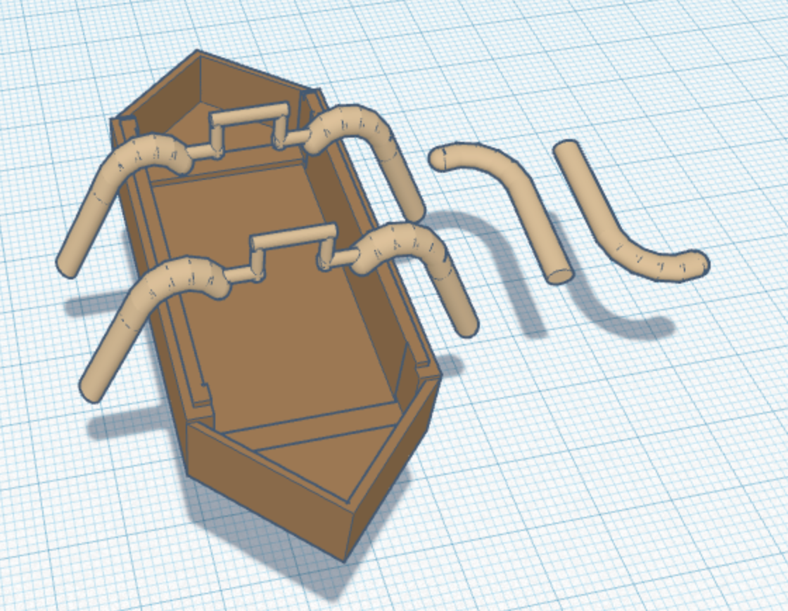
(Immage of boat CAD)
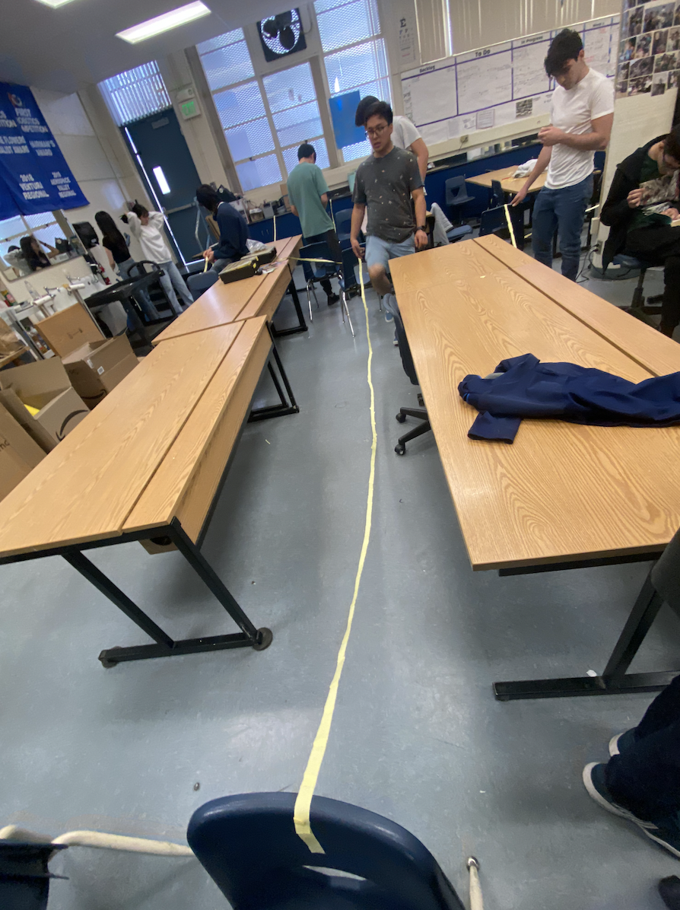
(Immage of sticky note bridge)
4/26/24 - Journal Entry #11
Over the las two weeks in engineering we worked on our final boat project
We started out by working on our boat based on our original CAD.
Then we noticed a flaw in our design and spent the rest of the week fixing it, and making some improvements.
Then the next week we finished the base of out boat and started to work on the walls of the boat.
One problem that our team forsees is the boat not being able to hold the weight of our group menbers, we plan to overcome this by double layering our base and walls to be stronger.
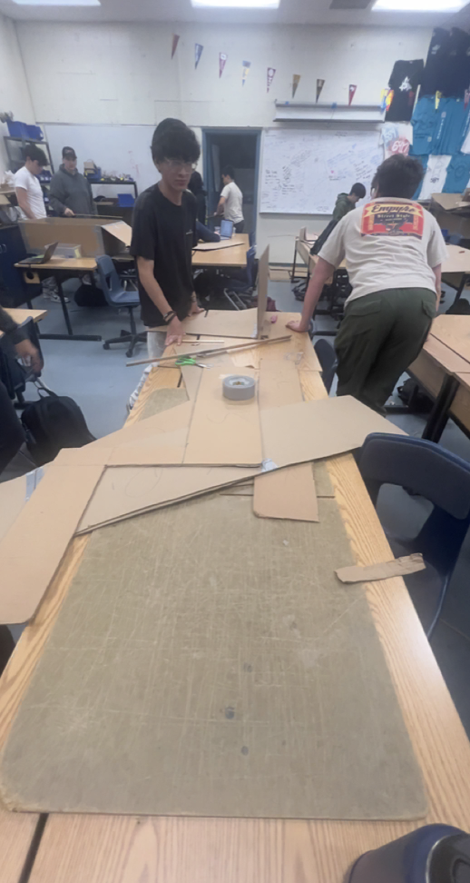


3/13/24 - Journal Entry #10